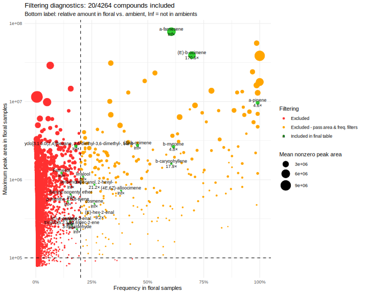
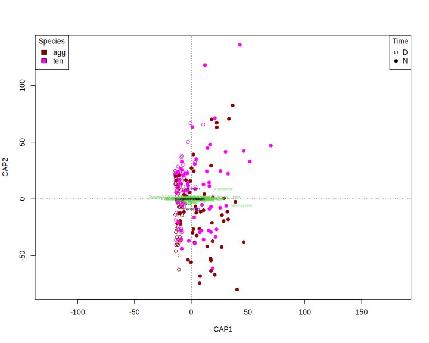

Ipomopsis nitrogen experiment 1 volatiles
Janelle Bohey, John Powers
2023-05-15
# library(googlesheets4)
# exp1_meta <- read_sheet("1k2XJUsRyTsQEeEoZE24yTvsl7kSyf2Gg6gehs8pUvOo", sheet="metadata", guess_max=200) %>%
# mutate(plant = as.character(plant))
# exp2_meta <- read_sheet("1EwPMsBAxqrRtuqH4uUBtthUOZlQluQICSvNr9u87h0E", sheet="metadata", guess_max=200) %>%
# mutate(plant = as.character(plant))
# gc_verdicts <- read_sheet("1X8oo7qZlo1p6MVl_CBeBe6CUTHEAcd-FWQzfHud3Qws", sheet = "2022gc220929") %>%
# mutate(sample2 = ifelse(is.na(sample), FileName, sample))
# exp1_verdicts <- gc_verdicts %>% filter(sample2 %in% exp1_meta$filename)
# exp2leaf_verdicts <- gc_verdicts %>% filter(sample2 %in% exp2_meta$filename)
# write_csv(exp1_verdicts, file = "data/exp1_verdicts.csv")
# write_csv(exp2leaf_verdicts, file = "data/exp2leaf_verdicts.csv")
# load("~/MyDocs/MEGA/UCI/Schiedea/Analysis/scent/rmbl/Inventory/shimadzu_data_22.rda")
# exp1.data <- shimadzu.data.22 %>% filter(Filename %in% exp1_verdicts$FileName)
# exp2leaf.data <- shimadzu.data.22 %>% filter(Filename %in% exp2_verdicts$FileName)
# save(exp1.data, file = "data/exp1_data.rda")
# save(exp2leaf.data, file = "data/exp2leaf_data.rda")
exp1.verdicts <- read_csv("data/exp1_verdicts.csv")
load("data/exp1_data.rda") #loads exp1.data (Shimadzu output)
exp1.data <- exp1.data %>% left_join(select(exp1.verdicts, Filename = FileName, sample2)) %>%
select(-Filename) %>% rename(Filename = sample2) %>% #replace FileName with the sample2 it holds (accounts for skips)
droplevels()
# load short names
ipochems <- read_csv("data/Ipo volatile compounds - chemsf_ipo.csv") %>%
select(name, shortname, standard, verdict) %>% filter(verdict != "")
#shorten chemical names and merge compounds with multiple names
shortnames <- ipochems %>% select(name, shortname) %>% filter(shortname!="") %>% deframe()
exp1.data$Name <- recode(exp1.data$Name, !!!shortnames)
exp1.all <- dcast(exp1.data, Filename~Name, sum, value.var="Area")
rownames(exp1.all) <- exp1.all[,1]
exp1.all[,1] <- NULLRead metadata
metadata <- read_csv("data/EXP 1 (N) Volatile sampling - metadata.csv") %>%
filter(filename != "#N/A") %>%
mutate(plantid = paste(species, plant)) %>%
left_join(read_csv("data/exp1_treatments.csv") %>% mutate(plant = as.character(plant)))
rownames(metadata) <- metadata$filename
metadata <- metadata[rownames(exp1.all),] #order metaddata to match order of data
metadata %>% count(species, time, treatment) %>% kable()| species | time | treatment | n |
|---|---|---|---|
| AMB | D | NA | 5 |
| AMB | N | NA | 10 |
| agg | D | high | 24 |
| agg | D | low | 24 |
| agg | N | high | 32 |
| agg | N | low | 28 |
| ten | D | high | 27 |
| ten | D | low | 20 |
| ten | N | high | 31 |
| ten | N | low | 32 |
metadata %>% filter(species !="AMB") %>% count(species, plantid, time) %>%
ggplot(aes(x=n, fill=time))+ geom_histogram(binwidth=1) + facet_wrap(vars(time), ncol=1)+
labs(x="Samples per plant") metadata %>% filter(species !="AMB") %>% group_by(time) %>%
mutate(pump.dt = ymd_hms(paste(date, pump)), pump.hr = hour(pump.dt)+minute(pump.dt)/60,
bag.dt = ymd_hms(paste(date, bag)), bag.hr = hour(bag.dt)+minute(bag.dt)/60,
end.dt = ymd_hms(paste(date, bag)), end.hr = hour(end.dt)+minute(end.dt)/60) %>%
summarize(min=min(bag.hr), max=max(end.hr)) %>% kable(caption="first bag time, last ending time, in hr", digits=2)| time | min | max |
|---|---|---|
| D | 9.08 | 14.72 |
| N | 19.93 | 21.80 |
ggplot(metadata, aes(y=equil, x=species)) + geom_boxplot() + labs(y="Equilibration duration")
ggplot(metadata, aes(y=pumping, x=species)) + geom_boxplot() + labs(y="Pumping duration")metadata %>% count(species) %>% kable(caption="total volatile samples by species")| species | n |
|---|---|
| AMB | 15 |
| agg | 108 |
| ten | 110 |
digging_date <- ymd("2022-06-24")
treatment_date <- digging_date + days(6)
ggplot(metadata, aes(x=date-treatment_date, fill=species))+geom_histogram(binwidth=1)metadata %>% count(date-treatment_date) %>% kable(caption=paste("days since treatments began on", treatment_date))| date - treatment_date | n |
|---|---|
| 20 days | 50 |
| 25 days | 111 |
| 35 days | 41 |
| 36 days | 22 |
| 42 days | 7 |
| 48 days | 2 |
Filtering
metadata <- metadata %>% mutate(type= ifelse(species=="AMB", "ambient","floral")) %>% rename(trap=sample) %>% as.data.frame() %>%
load_metadata(date = "date", sample = "filename", group = c("species","time"), type = "type")
longdata <- load_longdata(exp1.data, sample = "Filename", RT = "Ret.Time",
name = "Name", area = "Area", match = "SI", maxmatch=100)
sampletable <- make_sampletable(longdata, metadata)
chemtable <- make_chemtable(longdata, metadata) %>%
filter_RT(2, 17) %>%
filter_match(0.8) %>%
filter_freq(0.2, group = TRUE) %>%
filter_contaminant(cont.list = c("Acetic acid, (benzoylamino)hydroxy-" , "Methyl Isobutyl Ketone",
"Propanoic acid, 2,2-dimethyl-, 2-ethylhexyl ester", "2-hexyldecan-1-ol",
"Hexadecane, 1,1-bis(dodecyloxy)-","Decanoic acid, silver(1+) salt",
"tetradeca-11,13-dien-1-ol")) %>%
filter_area(min_maximum = 1e5) %>%
filter_ambient_ratio(sampletable, metadata, ratio = 3) %>%
filter_ambient_ttest(sampletable, metadata,
alpha = 0.05, adjust = "fdr")
chemtable$filter_final <- with(chemtable, filter_RT == "OK" & filter_match =="OK" &
(filter_freq.agg == "OK" | filter_freq.ten == "OK" | filter_freq.D == "OK" | filter_freq.N == "OK") &
filter_area == "OK" & filter_ambient_ratio == "OK" & filter_ambient_ttest == "OK" & filter_contaminant == "OK")
plot_filters(chemtable, option="rarity")
plot_filters(chemtable, option="ambient")
plot_filters(chemtable, option="volcano")plot_filters(chemtable, option="prop")
vol.qual <- prune_sampletable(sampletable, chemtable, metadata)
files_exclude <- c("NEXP1_agg6n3_N_220725_8152022_10.qgd") # flower fell off
vol.qual <- vol.qual[!(rownames(vol.qual) %in% files_exclude) ,]
meta <- metadata[metadata$type == "floral" & !(metadata$sample %in% files_exclude),] %>% droplevels()
vol.qual <- vol.qual / (as.numeric(meta$equil + meta$pumping)/3600) / meta$flrs #0.5 hr of equilibration plus 0.25 hr pumping, one flowerQuantitative integrations
#read in the large 2022 quant integration output and cut it down to NEXP chromatograms
# source("read_shimadzu.R")
# quantpath <- "~/MyDocs/MEGA/UCI/Schiedea/Analysis/scent/rmbl/RMBL Batches/quant_round3/"
# bfiles <- list.files(quantpath)
# quant.full <- map_dfr(set_names(paste0(quantpath, bfiles), bfiles), read.shimadzu.quant, .id="batch") %>%
# mutate(Name = trimws(Name), Area=replace_na(Area, 0)) %>%
# distinct(Filename, Name, .keep_all=T)
# quant.full %>% select(batch, Dirname, Filename, Name, Area) %>%
# mutate(Dirname = fct_relabel(Dirname, str_remove, "C:/GCMSsolution/Data/Project1_190815/")) %>%
# filter(Name != "1,6,10-Dodecatrien-3-ol, 3,7,11-trimethyl-") %>%
# mutate(Name = recode(Name, !!!shortnames)) %>%
# filter(str_detect(Filename, "^NEXP")) %>% select(-Dirname, -batch) %>%
# pivot_wider(names_from="Name", values_from="Area") %>%
# write_tsv("data/quant_2022.tsv")
vol <- read_tsv("data/quant_2022.tsv") %>%
left_join(select(exp1.verdicts, Filename = FileName, sample2)) %>% drop_na(sample2) %>%
select(-Filename) %>% rename(Filename = sample2) %>% #replace FileName with the sample2 it holds (accounts for skips)
column_to_rownames("Filename")
contams <- c("methyl salicylate", "benzaldehyde","trans-Geranylgeraniol","Decanal", "D-limonene", "Nonanoic acid", "caprolactam",
"3-methylbutanal oxime")#passed bouquet in OTC experiment but rare here
vol <- vol[rownames(vol.qual), !colnames(vol) %in% contams]
vol <- vol / (as.numeric(meta$equil + meta$pumping)/3600) / meta$flrs #0.5 hr of equilibration plus 0.25 hr pumping, one flower
(added_quant <- setdiff(colnames(vol), colnames(vol.qual)))#in quant (from temp experiment) but do not pass filters in this dataset [1] "g-terpinene"
[2] "methyl benzoate"
[3] "(3E)-4,8-dimethylnona-1,3,7-triene"
[4] "2-methylbenzonitrile"
[5] "a-campholenal"
[6] "indole"
[7] "a-copaene"
[8] "petasitene"
[9] "trans-a-bergamotene"
[10] "trans-b-bergamotene"
[11] "pseudoionone"
[12] "(E)-hex-3-en-1-ol"
[13] "[(E)-hex-3-enyl] acetate"
[14] "[(E)-hex-3-enyl] butanoate"
[15] "[(Z)-hex-3-enyl] butanoate"
[16] "a-terpineol"
[17] "cis-a-bergamotene"
[18] "(1Z,4Z,7Z)-1,5,9,9-tetramethylcycloundeca-1,4,7-triene"
[19] "(2E)-2,7-dimethylocta-2,6-dien-1-ol" (new_quant <- colnames(vol)[28:34]) #newly integrated, pass filters[1] "(E)-4-oxohex-2-enal"
[2] "p-mentha-1,3,8-triene"
[3] "4,7-Methano-1H-indene, 2,4,5,6,7,7a-hexahydro-"
[4] "cosmene"
[5] "(4E,6Z)-alloocimene"
[6] "Tricyclo[3.1.0.0(2,4)]hexane, 3,6-diethyl-3,6-dimethyl-, trans-"
[7] "3-Furaldehyde" #(need_quant <- setdiff(colnames(vol.qual), colnames(vol))) # filtered volatiles that need quant integration.
#vol <- bind_cols(vol, vol.qual[,need_quant]) #temporary, add a couple volatiles that don't have quant integrations yet (currently not on same scale!)best <- list()
i <- 1
vol.left <- vol.qual[,need_quant]^(1/4) # halfway between areas and presence-absence
while(ncol(vol.left)>0) {
print(dim(vol.left))
best[[i]] <- which.max(rowSums(vol.left))
vol.left <- vol.left[ , !decostand(vol.left[best[[i]],], method="pa"), drop=FALSE]
i <- i+1
}
(best.vol <- as.data.frame(t(vol.qual[unlist(best),need_quant])) %>% rownames_to_column("name"))
chemtable %>% filter(name %in% need_quant) %>% select(name, RT, RT.var) %>% arrange(RT)Heatmap
library(pheatmap)
library(dendsort)
library(viridis)
ph <- pheatmap(as.matrix(t(vol))^(1/4),
cluster_cols=T, show_colnames=F,
clustering_method="mcquitty", clustering_distance_rows="correlation",
clustering_distance_cols=vegdist(vol, method = "bray"),
clustering_callback = function(hc, ...){dendsort(hc, type="average")},
scale="none", color=magma(512),
annotation_col = data.frame(meta %>% select("species","treatment","time"), row.names=rownames(vol)),
annotation_row = data.frame(added = as.integer(colnames(vol) %in% added_quant),
new = as.integer(colnames(vol) %in% new_quant),
row.names=colnames(vol)),
fontsize = 10, border_color = NA, legend=F, annotation_legend=T, cutree_rows=6
)
Ordination
(cap_treat <- vegan::capscale(sqrt(vol) ~ species + time + treatment, data=meta))Call: vegan::capscale(formula = sqrt(vol) ~ species + time + treatment,
data = meta)
Inertia Proportion Rank
Total 1.119e+06 1.000e+00
Constrained 2.710e+05 2.422e-01 3
Unconstrained 8.481e+05 7.578e-01 34
Inertia is mean squared Euclidean distance
Species scores projected from 'sqrt' 'vol'
Eigenvalues for constrained axes:
CAP1 CAP2 CAP3
253550 13895 3576
Eigenvalues for unconstrained axes:
MDS1 MDS2 MDS3 MDS4 MDS5 MDS6 MDS7 MDS8
541130 145377 70421 26043 21105 8763 6999 5638
(Showing 8 of 34 unconstrained eigenvalues)anova.cca(cap_treat, by="margin") # samples should be averaged by plant firstPermutation test for capscale under reduced model
Marginal effects of terms
Permutation: free
Number of permutations: 999
Model: vegan::capscale(formula = sqrt(vol) ~ species + time + treatment, data = meta)
Df Variance F Pr(>F)
species 1 13673 3.4338 0.042 *
time 1 247296 62.1051 0.001 ***
treatment 1 11874 2.9820 0.059 .
Residual 213 848143
---
Signif. codes: 0 '***' 0.001 '**' 0.01 '*' 0.05 '.' 0.1 ' ' 1plot(cap_treat, type="n")
points(cap_treat, display="sites",
pch=c(1,19)[as.integer(meta$time)],
col=c("darkred","magenta")[as.integer(meta$species)])
legend("topleft", levels(meta$species), title="Species", fill=c("darkred","magenta"))
legend("topright", levels(meta$time), title="Time", pch=c(1,19))
text(cap_treat, display="species", cex=0.5, col=3)
text(cap_treat, display="cn", cex=0.5)
kable(arrange(as.data.frame(cap_treat$CCA$v), CAP1)) | CAP1 | CAP2 | CAP3 | |
|---|---|---|---|
| pseudoionone | -0.0466289 | -0.0286103 | -0.0478693 |
| 3-Furaldehyde | -0.0313627 | -0.1678228 | 0.1796747 |
| (E)-hex-3-en-1-ol | -0.0145013 | -0.0567520 | -0.2760300 |
| [(E)-hex-3-enyl] acetate | -0.0107872 | -0.0209940 | -0.1100368 |
| (E)-4-oxohex-2-enal | -0.0102194 | -0.1058386 | -0.2216186 |
| (1Z,4Z,7Z)-1,5,9,9-tetramethylcycloundeca-1,4,7-triene | -0.0080053 | 0.0192932 | -0.1017825 |
| a-copaene | -0.0030608 | 0.0059233 | -0.0648118 |
| (E)-hex-2-enal | -0.0024425 | -0.1070558 | -0.1064952 |
| petasitene | -0.0020122 | 0.0038955 | -0.0032808 |
| a-campholenal | -0.0004984 | -0.0097069 | 0.0032294 |
| a-terpineol | -0.0004266 | -0.0113405 | -0.0286755 |
| b-caryophyllene | 0.0021244 | 0.0381978 | -0.0981478 |
| [(Z)-hex-3-enyl] butanoate | 0.0024618 | 0.0187764 | -0.0673108 |
| cis-a-bergamotene | 0.0029374 | -0.0712061 | -0.1735346 |
| (3E)-4,8-dimethylnona-1,3,7-triene | 0.0047641 | -0.0212858 | -0.1316022 |
| 2-methylbenzonitrile | 0.0055787 | 0.0006322 | 0.0175079 |
| a-pinene | 0.0133052 | -0.3600026 | -0.7017099 |
| [(E)-hex-3-enyl] butanoate | 0.0135909 | 0.0390704 | -0.1553092 |
| indole | 0.0153626 | 0.0061166 | -0.0139694 |
| methyl benzoate | 0.0180180 | 0.0695855 | -0.0921219 |
| linalool | 0.0232602 | 0.0033926 | -0.0949287 |
| g-terpinene | 0.0254395 | -0.0922314 | -0.0348554 |
| 4,7-Methano-1H-indene, 2,4,5,6,7,7a-hexahydro- | 0.0332664 | -0.0201570 | 0.0124410 |
| cosmene | 0.0418343 | -0.0249159 | -0.0243011 |
| trans-a-bergamotene | 0.0442227 | 0.1447088 | -0.1115612 |
| Tricyclo[3.1.0.0(2,4)]hexane, 3,6-diethyl-3,6-dimethyl-, trans- | 0.0601384 | 0.1411240 | -0.0012082 |
| p-mentha-1,3,8-triene | 0.0817297 | -0.0262319 | 0.0789349 |
| trans-b-bergamotene | 0.0863327 | 0.1292292 | -0.0588498 |
| (2E)-2,7-dimethylocta-2,6-dien-1-ol | 0.0913108 | -0.1684855 | -0.1578825 |
| b-myrcene | 0.0956364 | -0.2070662 | -0.1254659 |
| (4E,6Z)-alloocimene | 0.0985230 | -0.0571712 | 0.0294210 |
| (Z)-b-ocimene | 0.1979264 | -0.1123265 | 0.0496740 |
| a-farnesene | 0.5149014 | 0.6962117 | -0.2928404 |
| (E)-b-ocimene | 0.8000577 | -0.4013149 | 0.2264772 |